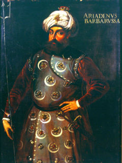

Barbaros Hayreddin Paþa (1478-1546)

“Hem de Ýslâmiyet milliyeti denilen mazi derelerinde ve hal sahrâlarýnda ve istikbal daðlarýnda hayme-niþin olan ve Salâhaddin-i Eyyubî ve Celâleddin-i Harzemþah ve Sultan Selim ve Barbaros Hayreddin ve Rüstem-i Zal gibi ecdatlarýnýzdan emsalleri gibi dâhi kahramanlarla bir çadýrda oturan bir aile gibi, herkesi baþkasýnýn haysiyet ve þerefiyle þereflendiren ve hayat-ý ulviyenin enmuzeci olan Ýslâmiyet milliyeti size emr-i kat'î ile emrediyor ki: Tâ herbiriniz umum Ýslâm'ýn mâkes-i hayatý ve hâmi-i saadeti ve umum millet-i Ýslâm'ýn ferdî bir misâl-i müþahhasý olunuz. Zira, maksadýn büyümesiyle himmet de büyür. Ve hamiyet-i Ýslâmiye'nin galeyaný ile ahlâk da tekemmül ve teâlî eder (Divan-ý Harb-i Örfi, s. 59).”Osmanlý Devletinin en büyük denizcisi ve deniz kuvvetleri komutanýdýr (kaptan-ý derya). Kazandýrdýðý zaferlerle Osmanlý denizciliði en parlak dönemini yaþamýþtýr. Akdeniz, Osmanlý Devletinin bir iç denizi haline getirilmiþtir. Ömrünü denizlerde geçirmiþtir. Beþ dili (Arapça, Rumca, Fransýzca, Ýtalyanca, Ýspanyolca) bilmektedir. Risâle-i Nur'da, Ýslâm tarihinin ve özellikle yaþadýðýmýz coðrafyanýn büyük kahramanlarý zikredilirken ondan da "dahi kahraman" (Divan-ý Harb-i Örfi, s. 59) olarak söz edilmektedir. Vefat edince, "Denizin reisi öldü" ibaresi düþülmüþtür.
Barbaros Hayreddin Paþa olarak tanýnýp meþhur olan büyük denizcinin asýl adý Hýzýr'dýr. Barbaros lakabý önceleri Avrupalýlar tarafýndan aðabeyi Oruç için kullanýldý. Oruç, kýrmýzýya çalan sakal renginden ötürü "Barbarossa" lakabýyla anýldý. Daha sonra bu lakap Hýzýr için de kullanýldý. Hayreddin lakabý ise Yavuz Sultan Selim tarafýndan kendisine verildi. Böylece asýl adý olan Hýzýr kullanýlmazken, Barbaros Hayreddin Paþa olarak tanýnýp, meþhur oldu.
Midilli, Osmanlý Devletinin eline geçtikten sonra Hýzýr'ýn babasý Yakub, ailesini alarak buraya yerleþti. Burada Hýzýr ile birlikte dört oðlu dünyaya geldi. Doðum tarihi kesin olarak bilinmemekle birlikte 1478 yýlýnda doðduðu sanýlmaktadýr. Hýzýr önceleri deniz ticareti ile meþgul oldu, gemi iþletti. Midilli, Selanik ve Eðriboz arasýnda ticaret yapmaya çalýþtý. Ancak, Akdeniz hemen hemen tamamen korsanlarýn kontrolünde olduðundan, ticareti sürdürmek çok zordu. Bu zorluklar içinde gemi iþleten Hýzýr, Rodos þövalyeleri tarafýndan esir alýndý. Bir fýrsatýný bulup kaçarak esaretten kurtuldu. Akabinde aðabeyi Oruç ile birlikte Tunus'un Cerbe adasýna giderek burayý üs olarak kullanmaya baþladý.
Hýzýr ve Oruç, Akdeniz'de faaliyetlerini sürdürerek Ýtalyan ve Ýspanyollara karþý çeþitli akýnlarda bulundular. 1513 yýlýnda Ýspanyollarýn elinde bulunan Cicelli'yi ele geçirdiler. Buradaki halk Oruç'u sultan ilan etti. Bir süre sonra kardeþler Middilli'ye döndüler. Bu tarihte Osmanlý tahtýnda oturan Yavuz Sultan Selim'e aracý göndererek Osmanlý himayesine girme arzularýný ilettiler. Talepleri kabul gördükten sonra, Ýspanyollarýn iþgali altýnda bulunan Cezayir'in yardýmýna koþtular. Cezayir'i iþgalden kurtardýlar. Bir süre sonra (1518) Ýspanyollarla yaptýklarý bir savaþta Oruç þehit oldu.
Hýzýr yalnýz kaldýktan sonra bir kez daha Ýstanbul'a elçi gönderdi. Yavuz Sultan Selim, Hýzýr'ýn himayesini kabul ettiði gibi kendisine; "Nasrüddin, Hayrüddin" diyerek iltifatlarda bulundu, Cezayir hakimi olarak kabul gördüðünü simgeleyen hatt-ý þerif gönderdi. Böylece Hýzýr resmen Osmanlý himayesine girmiþ oldu. Ayrýca kendisine Anadolu'da gönüllü asker toplama yetkisi de verildi. Hýzýr, Cezayir'de Osmanlý padiþahý adýna hutbe okuturken kendisi de Hayreddin Paþa olarak anýlmaya baþlandý.
Hayreddin Paþa'nýn mahiyeti ve gücü giderek arttý. Özellikle Ýspanyollarla Ýtalyanlara karþý çetin mücadelelere giriþti. Ýspanyollarýn büyük baskýsý altýnda yaþayan Gýrnata Müslümanlarýnýn yardýmýna koþtu. Memleketlerini terketmek zorunda kalan bu insanlarýn Afrika sahillerine gemilerle taþýnmasýna yardýmcý oldu. Çok sayýdaki göçmen Cezayir'e de getirilerek buraya yerleþmeleri saðlandý. Ýspanyollarla yapýlan mücadeleler sonunda muhtelif yerler ele geçirildi. Kanuni Sultan Süleyman, Hayreddin Paþa'yý donanma komutanlýðýna getirmek üzere Ýstanbul'a davet etti. O da, yerine evlatlýðýný vekil býrakarak yola çýktý.
Hayreddin Paþa, 27 Aralýk 1533 tarihinde Ýstanbul'a vardý. Bir gün sonra da padiþah tarafýndan kabul edilerek saraya çýktý. Akabinde Kaptan-ý Derya'lýða yani Deniz Kuvvetleri Komutanlýðý'na atandý. Ayný zamanda Kaptan-ý Deryalýk makamýnýn bürokrasi içindeki konumu da yükseltilerek Beylerbeyliði derecesine getirildi. Kaptan-ý Derya ilk iþ olarak karýþýklýk halinde olan ve iþgal altýnda bulunan Tunus'un üzerine yürüdü. 22 Eylül 1534 yýlýnda burayý ele geçirdi. Ancak Avrupalýlar hazýrladýklarý büyük bir donanma ile Tunus'un üzerine gelince, sayýca çok daha az olan Hayreddin Paþa kuvvetleri çekildi ve Tunus elden çýkmýþ oldu. Bu geliþmelerin olduðu sýralarda Avrupa, denizlerdeki Osmanlý hakimiyetinden ve gücünden rahatsýz olmaya baþladý. Ýspanyollarýn öncülük ettiði Avrupa ittifaký gerçekleþtirilmeye çalýþýldý. Avrupa ittifaký saðlanmaya çalýþýlýrken, faaliyetlerini sürdüren Hayerddin Paþa, çok sayýdaki irili ufaklý adayý Osmanlý topraklarýna kattý.
Ýspanya, Papalýk, Venedik ve Portekizliler arasýnda yapýlan ittifak anlaþmasýný müteakiben Andrea Doria komutansýnda büyük bir donanma hazýrlandý. Bu donanma 246 gemiden müteþekkil olup Korfu adasýnda toplandý. Buna karþýlýk Hayreddin Paþa'nýn komutasýndaki donanmada ise sadece 122 gemi yer almaktaydý. Her iki donanma Preveze açýklarýnda karþýlaþtý. 27-28 Eylül 1538 tarihlerinde meydana gelen savaþ Osmanlý donanmasýnýn zaferiyle neticelendi. Andrea Doria, sayýca kendilerinden çok daha az olan Osmanlý Donanmasýnýn ilk evvel saldýrýya geçmesi karþýsýnda büyük bir þaþkýnlýk geçirdi. Kendini toparlamaya fýrsat bulamadan geri çekilmek zorunda kaldý. Çok sayýda esir alýndý. Osmanlý donanmasý çok az kayýp vermesine karþýlýk Haçlý donanmasý büyük bir bozguna uðradý.
Hayreddin Paþa'nýn kazanýlmasýnda büyük hisse sahibi olduðu bu zafer Ýslam dünyasýnda büyük bir sevince sebep olurken, Batýda o oranda üzüntüye sebep oldu. Bu maðlubiyet karþýsýnda Hayreddin Paþa'ya olan hayranlýklarýný gizlemediler. Diðer taraftan bu zaferle Barbaros, Kanuni Sultan Süleyman'ýn da ilgisine mazhar oldu. Bu zaferden sonra Akdeniz tamamen Osmanlý Devleti'nin kontrolüne geçti. Venedikliler barýþ yapmak zorunda kaldýklarý gibi bundan sonra vergi vermeye baþladýlar.
Kanuni Sultan Süleyman, Fransýzlarýn ricasý üzerine, ortak hareket etmek ve Fransýzlara yardým etmek maksadýyla Hayreddin Paþa'yý donanmasýnýn baþýnda gönderdi. Fransýz donanmasý ile birlikte 20 Aðustos 1543 yýlýnda bazý kaleler zapt edildi. Bir süre buralarda kalan donanma geri döndü. Dönüþ sýrasýnda Cenova'da esir tutulan Turgut Reis'i esaretten kurtardý. Bu sefer, Hayreddin Paþa'nýn son büyük seferi oldu. Ömrü denizlerde geçen ve çok büyük zaferlerin kazanýlmasýna ön ayak olan, çok sayýda fetihleri gerçekleþtiren Hayreddin Paþa, 1546 yýlýnda hastalandý. Hastalýðýndan kýsa bir süre sonra da 5 Temmuz 1546 yýlýnda vefat etti. Cenazesi, hayatta iken yaptýrmýþ bulunduðu Beþiktaþ'taki medresesinin yanýna defnedildi. Vefatýyla birlikte "denizlerin reisi öldü" þeklindeki ifadelere yer verildi.
Hayreddin Paþa, Osmanlý donanmasýna en parlak dönemini yaþattý. Denizlerde Osmanlý donanmasýný zirveye taþýdý. Diðer taraftan kendi yetiþtirmiþ olduðu kaptan ve denizciler de çok büyük zaferlere imza attýlar. Risâle-i Nur'da ismi zikredilirken, dahi ve kahramanlardan biri olarak tavsif edilmektedir. Ýslam coðrafyasýnda, tarihe mal olmuþ bu büyük þahsiyetler, ýrký ve milliyeti ne olursa olsun, bütün Müslümanlarýn gurur kaynaðý olmuþlardýr. Risâle-i Nur'da, bu hususun altý çizilerek dikkat çekilmektedir.